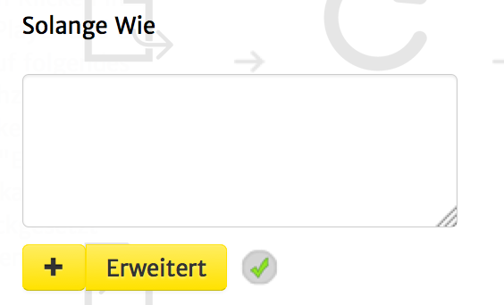
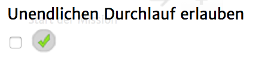

Mit Hilfe dieses Aktionstyps lassen sich bestimmte Aktionen solange wiederholen, bis eine bestimmte Bedingung nicht mehr erfüllt ist. In der Informatik würde man von einer "While"-Schleife sprechen.
Diese Aktion besteht aus zwei Hauptkomponenten, nämlich einer Bedinung (das Solange Wie) und einer Liste von Aktionen (das Dann).

Die Schwierigkeit, diese Aktion richtig einzusetzen, liegt hauptsächlich in ersterer Komponente - dem Soange-Wie.
Erfahre mehr über Bedingungen.
Außerdem sind Solange-Wie-Schleifen in geoquest abgesichert nicht mehr als 1000 Durchläufe zu bestreiten. Nach dem 1000. Durchlauf wird die Schleife automatisch beendet.
Dieser Sicherheitsmechanismus kann mit Hilfe der Einstellung "Unendlichen Durchlauf erlauben" explizit abgeschaltet werden.
